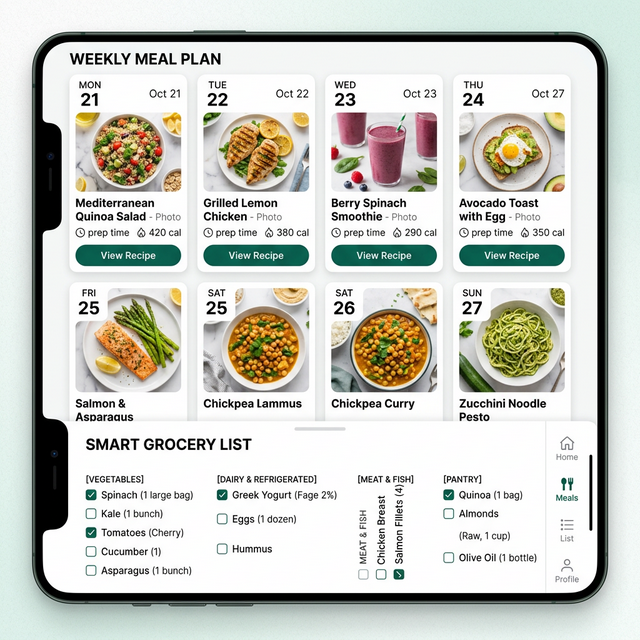

1. Fasting Protocols Compared: 14:10 vs. 16:8 vs. 18:6
Choosing a fasting window should fit your work schedule, training time, and social dinners rather than rigid rules. If you train early in the morning or feel lightheaded waiting until noon, a 14:10 schedule delivers almost identical appetite control when daily calories and protein are matched:
| Protocol | Fasting / Eating Split | Ideal Meal Structure | Best Suited For |
|---|---|---|---|
| 14:10 Method | 14 hrs fast / 10 hrs eat (e.g., 9:00 AM – 7:00 PM) | 3 balanced meals (500–600 kcal each) | Beginners, morning gym-goers, and individuals who prefer eating breakfast |
| 16:8 Method | 16 hrs fast / 8 hrs eat (e.g., 12:00 PM – 8:00 PM) | 2 full meals (650–750 kcal) + 1 protein snack (250 kcal) | Office professionals and social diners who prefer larger lunches and dinners |
| 18:6 Method | 18 hrs fast / 6 hrs eat (e.g., 1:00 PM – 7:00 PM) | 2 dense meals (750–850 kcal each) | Smaller calorie budgets (1,350–1,600 kcal) where 2 large meals feel much more satisfying than 4 tiny ones |
Track Your Eating Window & Calorie Deficit in One Dashboard
Log your break-fast meal and dinner in the Free Food Diary & Barcode Scanner, or unlock the dedicated Intermittent Fasting Timer (Plus) and AI Meal Planner (Pro) to automate your 16:8 schedule.
2. What to Eat to Break a 16:8 Fast Without Bloating or Overeating
After 16 hours without food, stomach acid volume and digestive enzyme secretion are primed, while hunger hormones (ghrelin) are elevated. Breaking your fast with a high-fat, hyper-palatable restaurant meal (like a bacon cheeseburger, pastries, or heavy cream pasta) slows gastric emptying and makes it easy to consume 1,200+ calories in 15 minutes before fullness signals reach your brain.
Use these US & European supermarket break-fast meals that deliver 40–50 g of protein for under 650 kcal while keeping digestion light:
| Break-Fast Option | US Imperial Portion | EU / UK Metric Portion | Calories & Protein |
|---|---|---|---|
| Mediterranean Chicken & Rice Bowl | 5 oz cooked chicken breast + 3/4 cup cooked basmati rice + 1 cup cucumber/tomato salad + 1 tsp olive oil | 140 g cooked chicken breast + 135 g cooked basmati rice + 150 g cucumber/tomato + 5 ml olive oil | 485 kcal · 48 g protein |
| High-Protein Skyr / Greek Yogurt Bowl | 1 cup (8 oz) 0% Greek yogurt or Skyr + 1/2 scoop whey + 1/2 cup rolled oats + 1/2 cup berries | 225 g 0% Greek yogurt or Skyr + 15 g whey protein + 40 g rolled oats + 75 g berries | 440 kcal · 44 g protein |
| Egg White & Smoked Salmon Rye Plate | 2 whole eggs + 1/2 cup liquid egg whites + 2 oz smoked salmon + 2 slices wholegrain rye bread | 2 whole eggs + 120 ml liquid egg whites + 55 g smoked salmon + 2 slices dark rye bread (80 g) | 490 kcal · 43 g protein |
| Tuna, White Bean & Spinach Salad | 1 can (5 oz drained) tuna in water + 1/2 cup cannellini beans + 2 cups baby spinach + lemon & 1 tbsp olive oil | 140 g drained tuna in spring water + 90 g white beans + 60 g spinach + lemon & 15 ml olive oil | 435 kcal · 46 g protein |
3. Protecting Lean Muscle in a Compressed Eating Window
During a calorie deficit, your body looks for energy from both stored body fat and lean tissue. Combining resistance training with 1.6 to 2.2 g of protein per kg of body weight (0.75 to 1.0 g per lb) preserves lean muscle mass.
- Meal 1 (12:00 PM — The Anchor): Hit at least 40–50 g of complete protein to stimulate muscle protein synthesis after the overnight fast.
- Afternoon Bridge (3:30 PM — The Craving Blocker): A 200–250 kcal snack with 25–30 g of protein (such as 200 g cottage cheese, a protein shake, or edamame) prevents you from arriving at 7:00 PM dinner ravenous.
- Meal 2 (7:30 PM — Overnight Satiety): Pair 45–55 g of slower-digesting protein (salmon, lean beef steak, chicken thighs, or tofu stir-fry) with roasted root vegetables and fibrous greens so you stay full until bedtime.

4. Three Hidden Mistakes That Erase Your Fasting Deficit
- "Calorie Creep" in Coffee and Hydration Drinks: Adding 2 tablespoons of heavy cream (100 kcal), 1 tablespoon of MCT or coconut oil (120 kcal), or sweetened electrolyte packets twice a morning adds 250–350 untracked calories before your window even opens. Stick to water, sparkling mineral water, plain black coffee, or unsweetened tea.
- Weekend Window Drift: Shifting your eating window from 12:00 PM–8:00 PM on weekdays to 10:00 AM–11:00 PM on Friday and Saturday adds 4–5 extra eating hours per weekend day, often erasing Monday-through-Thursday's calorie deficit.
- Compensating with Liquid Calories or Nuts at Night: Trying to "squeeze in" calories right before your window closes at 8:00 PM by eating handfuls of almonds or peanut butter directly from the jar can easily push you 400 kcal over target.
Frequently Asked Questions
Does black coffee or sparkling water break intermittent fasting?
No. Plain black coffee (under 5 kcal per cup), unsweetened green or herbal tea, and unflavored sparkling water do not disrupt an energy-balance fast. Avoid adding sugar, milk, oat milk, collagen peptides, or butter/MCT oil during your fasting hours.
Can I lift weights or do cardio during my fasted window?
Yes. Many people train comfortably in the morning after black coffee and water with electrolytes. If you train early in the morning (e.g., 7:00 AM), consider shifting your eating window earlier (e.g., 10:00 AM – 6:00 PM) so you can eat a high-protein post-workout meal within a few hours of lifting.
Who should avoid intermittent fasting?
Time-restricted eating is not advised for individuals who are pregnant or breastfeeding, adolescents still growing, anyone with a current or past history of disordered eating, or individuals managing diabetes or medications that require food at specific intervals without direct physician supervision.
Sync Your Fasting Schedule & Daily Macro Targets
Download CalorieCalc to log your eating-window meals with our 100% Free Food Diary, Barcode Scanner, and Android Home Screen Widgets—or upgrade to Plus/Pro for our automated Fasting Timer and AI Meal Planner.